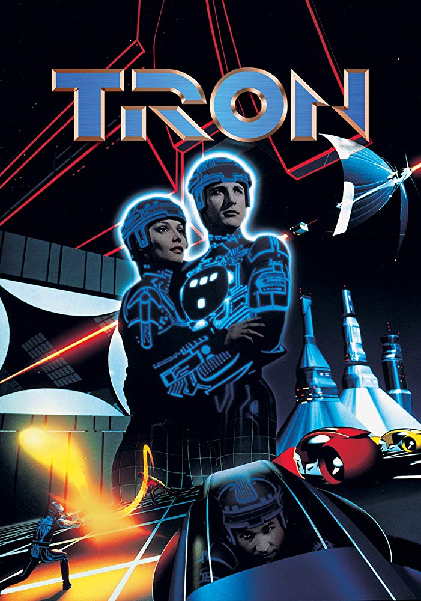
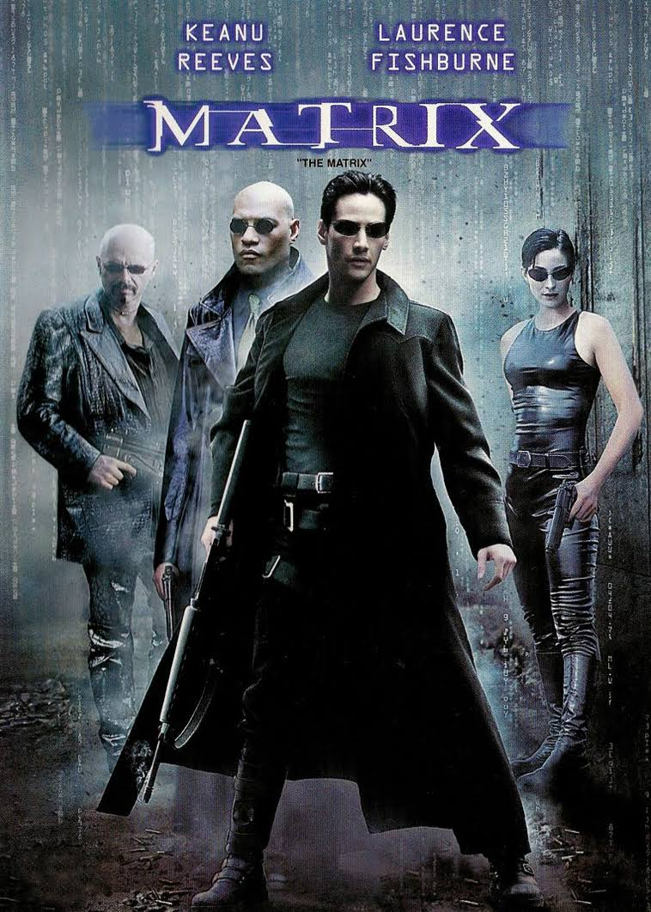

Obras
-
Tron - Uma Odisseia Eletrônica
Quando o talentoso engenheiro de computação Kevin Flynn descobre que Ed Dillinger, um executivo da sua empresa, está roubando seu projeto, tenta invadir o sistema. No entanto, Flynn é transportado para o mundo digital em um programa antagônico.
Data de lançamento: 12 de agosto de 1982 (Brasil)Diretor: Steven Lisberger
Séries de filmes: Tron Series
Bilheteria: 50 milhões USD
Orçamento: 17 milhões USD
Música composta por: Wendy Carlos
Gênero: ficção
-
Matrix
Um jovem programador é atormentado por estranhos pesadelos nos quais sempre está conectado por cabos a um imenso sistema de computadores do futuro. À medida que o sonho se repete, ele começa a levantar dúvidas sobre a realidade. E quando encontra os misteriosos Morpheus e Trinity, ele descobre que é vítima do Matrix, um sistema inteligente e artificial que manipula a mente das pessoas e cria a ilusão de um mundo real enquanto usa os cérebros e corpos dos indivíduos para produzir energia.
Data de lançamento: 21 de maio de 1999 (Brasil)
Diretoras: Lana Wachowski, Lilly Wachowski
Música: Don Davis
Bilheteria: US$ 63 milhões
Gênero: ação; ficção
-
Jogador Nº 1

Em 2045, Wade Watts, assim como o resto da humanidade, prefere a realidade virtual do jogo OASIS ao mundo real. James Halliday, o excêntrico criador do jogo, morre e deixa sua fortuna inestimável para a primeira pessoa que descobrir a chave de um quebra-cabeça diabólico que ele arquitetou. Para vencer, Watts precisa abandonar a existência virtual e experimentar o amor e a realidade.
Data de lançamento: 29 de março de 2018 (Brasil)
Diretor: Steven Spielberg
Bilheteria: 582,9 milhões USD
Orçamento: US$ 175 milhões
Gênero: ação; aventura; distópico; ficção científica
Produção: Steven Spielberg; Donald De Line; Dan Farah; Kristie Macosko Krieger
-
Sword Art Online

Sword Art Online é uma série de light novel escrita por Reki Kawahara e ilustrada por abec. O enredo da série ocorre em um futuro próximo e se concentra em vários mundos de realidade virtual de MMORPG.
Autor: Reki Kawahara
Personagens: Asuna, Kirito Kirigaya, Asada Shino, Eugeo, Alice, Nobuyuki Sugo, Klein
Gêneros: Ficção de aventura, Ficção científica
-
Overlord

Overlord é uma série Japonesa de light novels escrita por Kugane Maruyama e ilustradas por so-bin. Teve sua serialização online em 2010, antes de ser adquirido pela Enterbrain. Nove volumes foram publicados desde 30 de julho de 2012. Era o último dia do jogo online “Yggdrasil”. Momonga, jogador assíduo com um personagem de aparência esquelética, esperava calmamente o servidor de seu tão amado game ser encerrado. Ao olhar ao seu redor, NPCs, personagens não-jogáveis, começam a agir e pensar por conta própria.
Autor: Kugane Maruyama